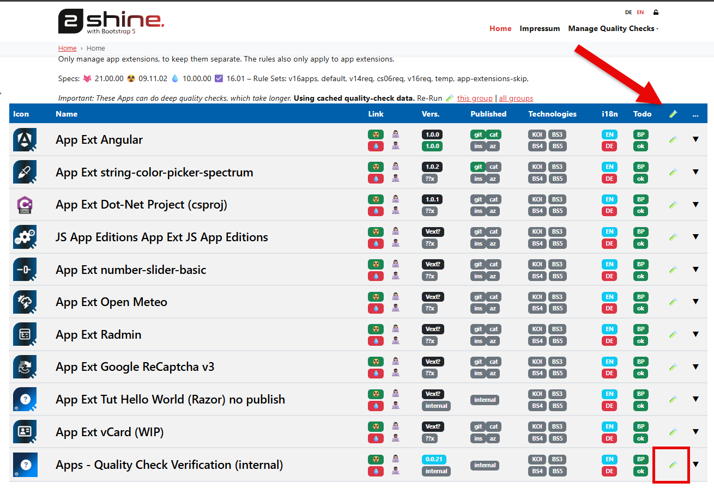
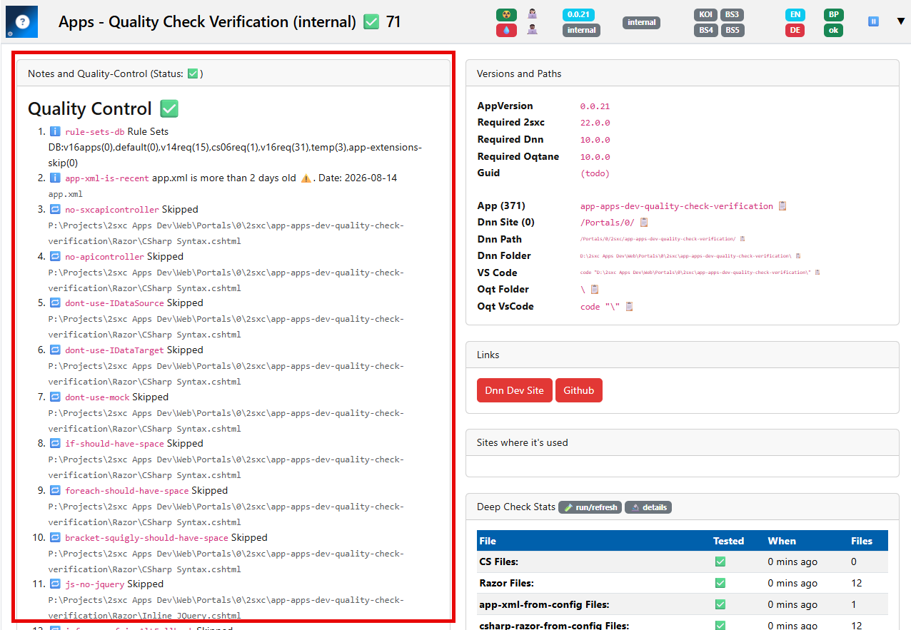

Quality Management for 2sxc / EAV Standard Apps
Warning
This is meant for people who want to contribute to the underlying source code of 2sxc and EAV.
If you only want to USE 2sxc / EAV, then you do NOT need this.
When we create Apps for distribution, they must adhere to very high quality standards, because others will look at the code and use it as reference.
Tip
If you want to create your own Apps, then this may not be important to you. But we from 2sxc want to be sure that our Apps are built in a consistent way, and that they are well documented and tested. So if you want to contribute an App in our name, please follow these guidelines.
How It Works
The quality system consists of:
- Registered Apps which can be selected for a check.
- Check definitions which describe unwanted or outdated patterns.
- Results grouped by App and check.
Checks can inspect source files for patterns such as:
- inline scripts;
- platform-specific namespaces in hybrid code;
- obsolete APIs or namespaces;
- discouraged data, toolbar, or image patterns.
Quality checks support code review, but do not replace builds, manual tests, security review, or installation tests.
Run Checks
Open Manage Quality Checks and use the highlighted action for the App you want to check:

Checks can be run for:
- one App while developing or fixing it;
- selected Apps after changing a shared convention or API;
- all registered Apps before a coordinated release or after changing a check definition.
After changing an App, run its checks again. Existing results describe the files at the time of the previous run.
Handle Results
The App detail page shows the quality-control status and the result of each applicable check:

Review the summary, open the affected App, and inspect each finding. Use one of these solutions:
- Fix the code using the recommended pattern.
- Correct the check definition if it produces general false positives.
- Document an exception if the pattern is intentional in this file.
A runner error is not a quality finding. It means the App could not be checked reliably—for example because its registration or path is invalid.
Intentional Exceptions
A specific check can be disabled for a file with:
2sxclint:disable:<check-id>
Example:
@{
// This App intentionally renders JavaScript entered by an editor.
// 2sxclint:disable:no-inline-script
}
For multiple checks, use one line per check:
// Required for the DNN branch of this hybrid controller.
// 2sxclint:disable:no-dnn-namespaces
// 2sxclint:disable:no-web-namespace
The check ID must match the ID in the result exactly. Always explain why the exception is required and disable only the affected check.
Manage Check Definitions
A check definition should have:
- a stable and unique check ID;
- a clear description of the problem and its solution;
- the correct severity, file types, and App scope;
- a narrow match which avoids unrelated code.
Before applying a new or changed definition to all Apps:
- Test code which should produce a finding.
- Test code which should pass.
- Test the matching
2sxclint:disabledirective. - Run the check against a small, representative App selection.
Changing a check ID also requires updating all matching disable directives in the App repositories.
History
- 2026-08-25: Documented quality checks for standard Apps.